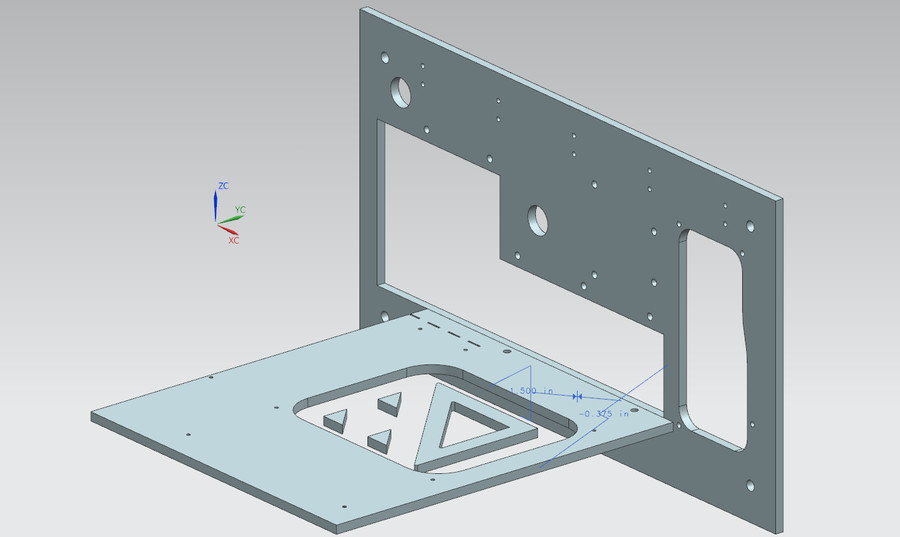
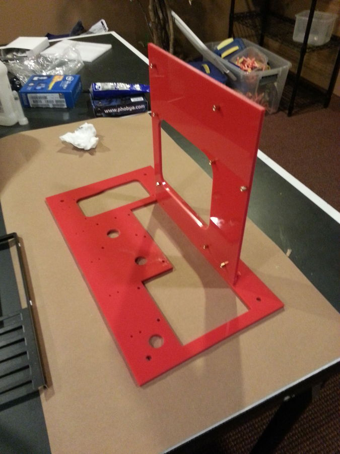
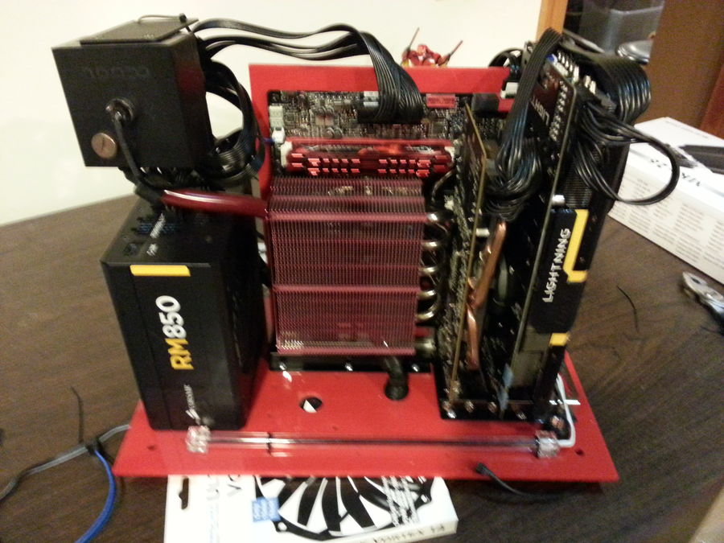
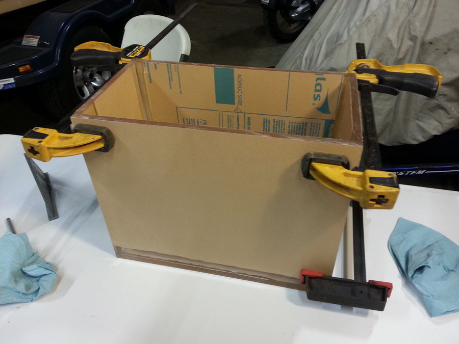
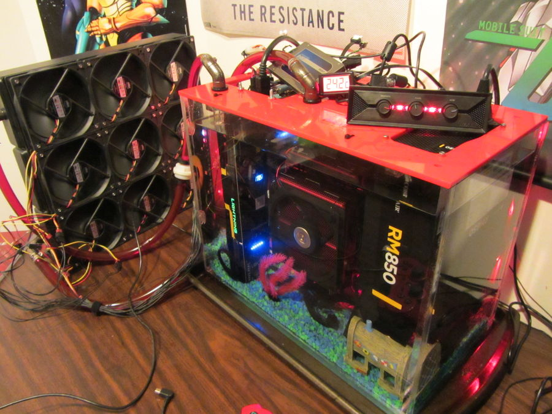
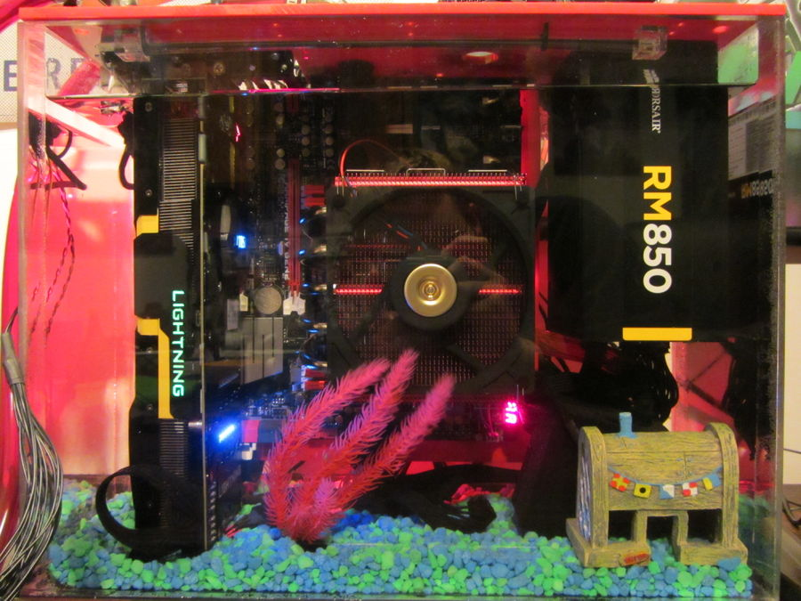
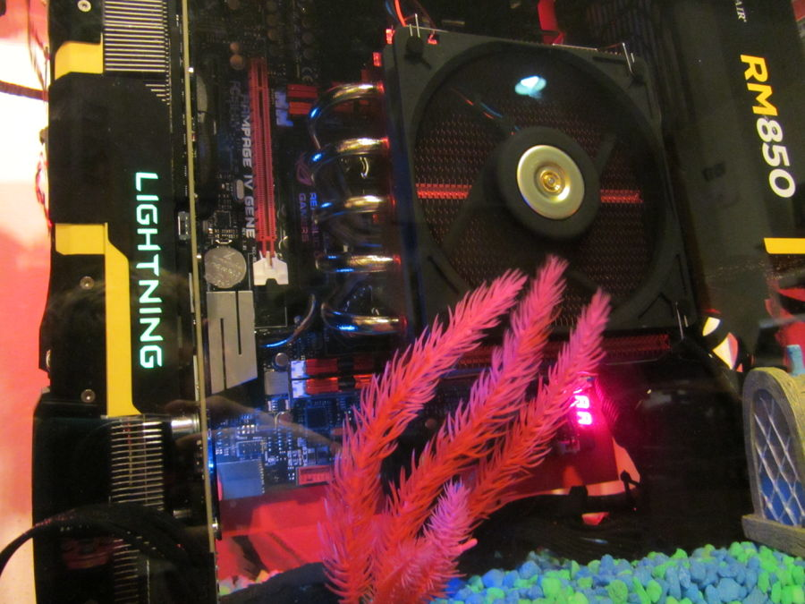

Mineral Oil PC
In 2014, I built this computer as something I could show off, while also providing cooling for all components in the PC. The case was built out of laser-cut acrylic sheet with my Solidworks design. The oil was cooled by a 9x120mm radiator and a Liang D5 pump. I used normal air cooling heatsinks for the graphics card and the CPU, with an unusual 3-blade fan on the CPU. In order to make sure that the fan would not pull above the standard 1A current while in oil, I tested it in a bucket with a multimeter and a 12V power supply. The fan drew 0.33 amps in oil and 0.11 in air. The build suffered from high temperatures on the CPU, so i experimented with routing the oil flow through a waterblock, but that also was not adequate. Only a few months in, I retired this build, as the cooling was not as good as a simple water loop, and maintaining the system was too difficult for a dorm room.
      